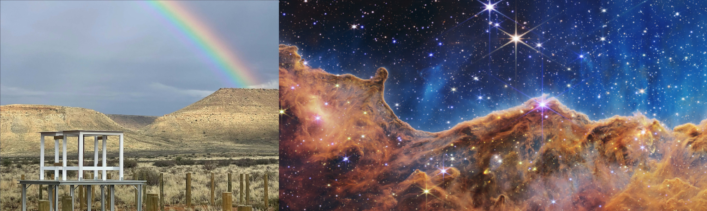
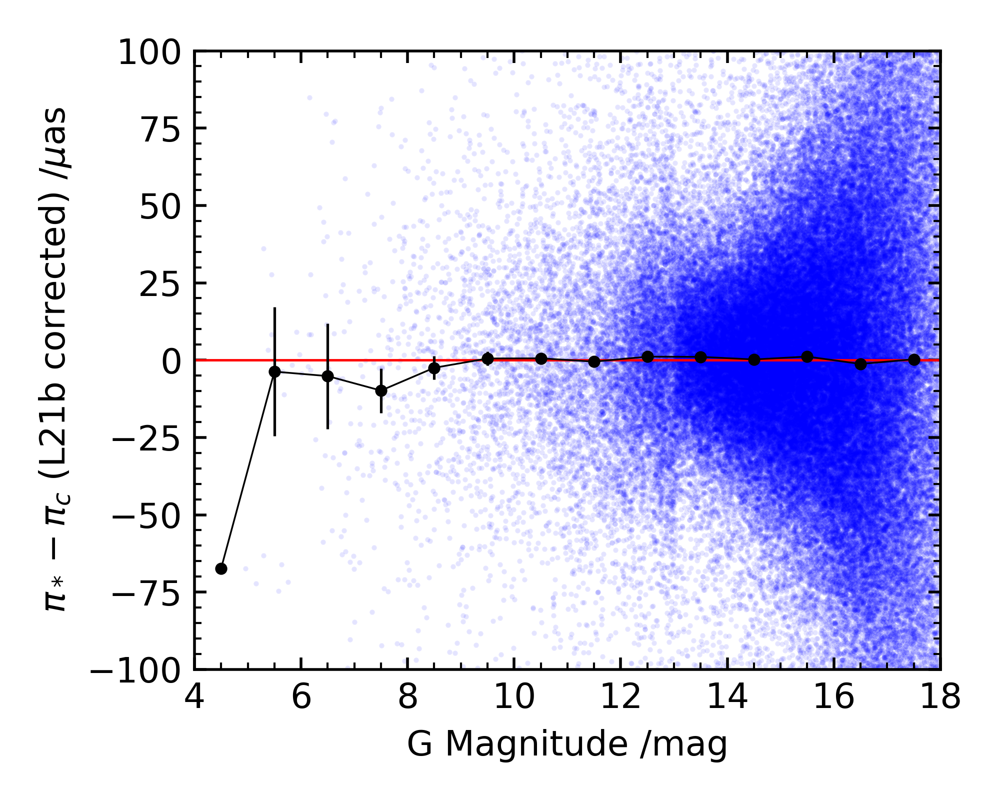
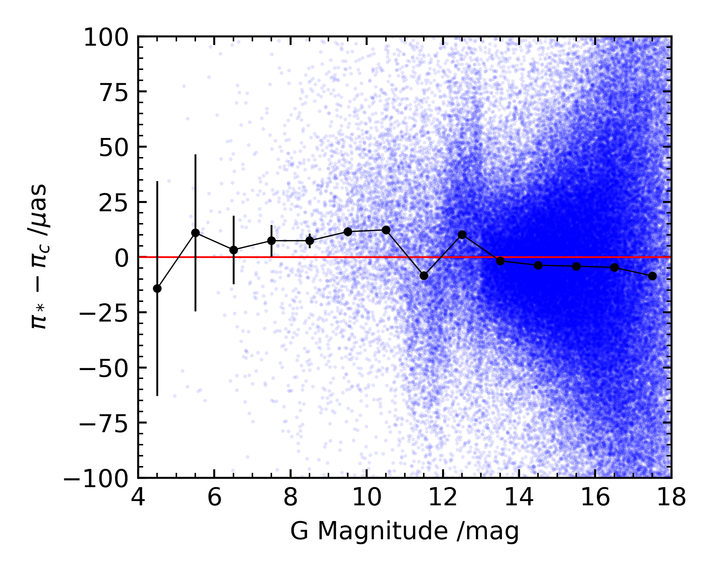
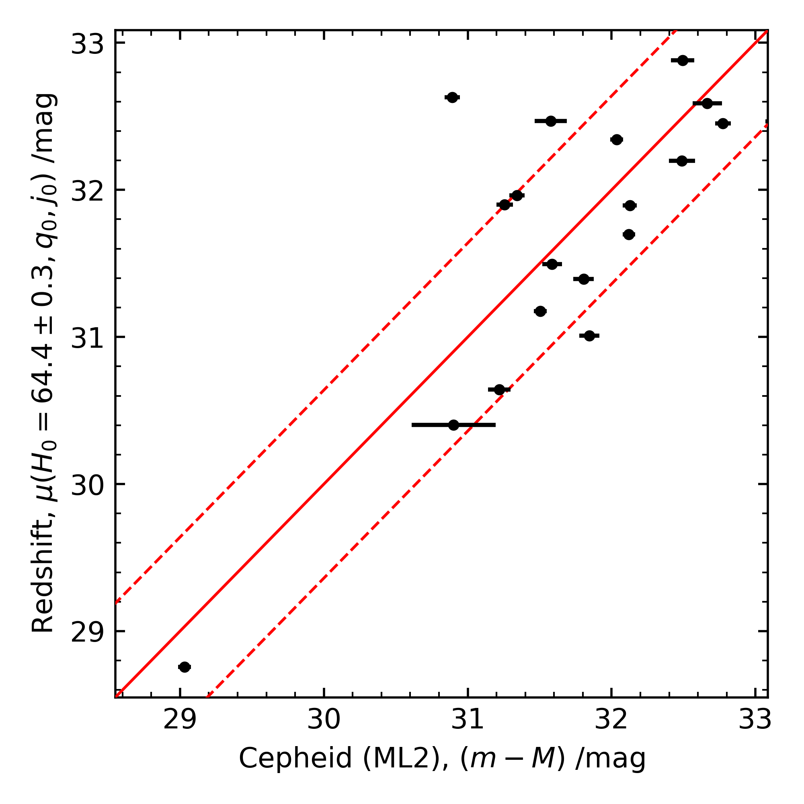
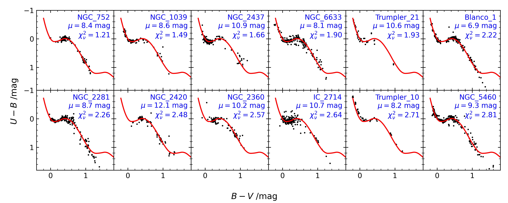

Current Research
21cm Radio Cosmology
I will be working with Eloy de Lera Acedo, using data from the REACH radio telescope in the Karoo desert in South Africa to investigate the 21cm radio signal at high redshifts.
Undergraduate Research
The Hubble Tension and Cepheid Systematics
Gaia Parallaxes
 The modern SH0ES method of calculating the Hubble constant uses parallaxes from the Gaia program as an anchor in the first rung of their distance ladder however a systematic error has been found in the data (Lindegren et al. 2021b, hereafter L21b). By investigating the effectiveness of the suggested correction to the parallaxes using the relative difference between cluster member star parallaxes, π*, and the median parallax of the cluster, πc, I am investigating there are any residual errors after L21b correction which may have an effect on the SH0ES value of H0.
Two-rung Distance Ladder
While the usual SH0ES method uses a three rung method of calibrating redshifts from supernovae distances and cepheid distances, it is possible to remove the supernovae distances and calibrate redshifts directly from cepheid distances. Without any corrections due to peculiar velocities, this yields a Hubble constant which is consistent with Planck's CMB value. I am investigating how correcting for peculiar velocities changes the resulting value of H0 and whether other factors such as a possible local underdensity (or Local Hole) need to be considered.
Galactic Reddening
The physics of dust reddening is still poorly understood, and it may be possible the the standard law of dust reddening, AV = 3.1 E(B-V), may need to be modified. By fitting main-sequence models to Gaia G, GBP, GRP and UBV photometry of open cluster stars, I am attempting to determine whether the reddening law needs to be changed to include a distance dependence. If found, this distance dependence could have an impact on the calibration of Cepheid distances and hence the value of the Hubble constant (for example, Mortsell et al. 2021).
